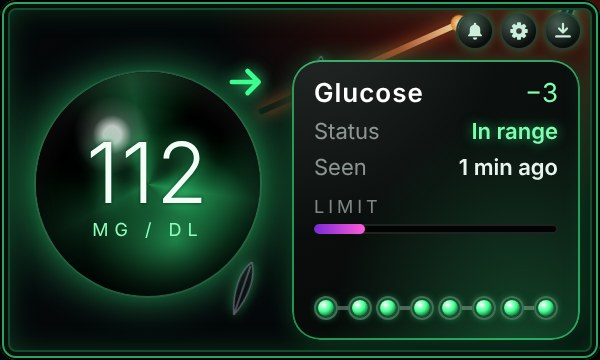
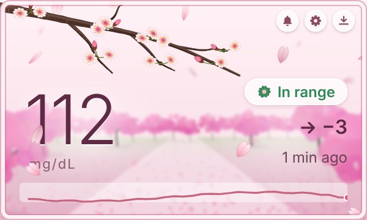
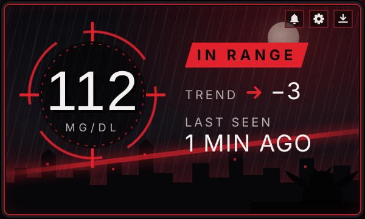
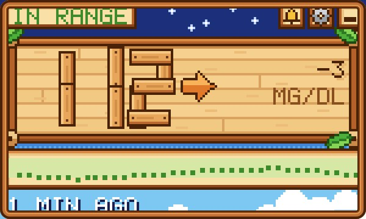
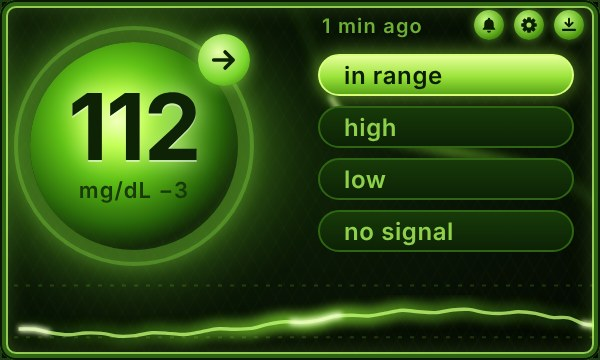
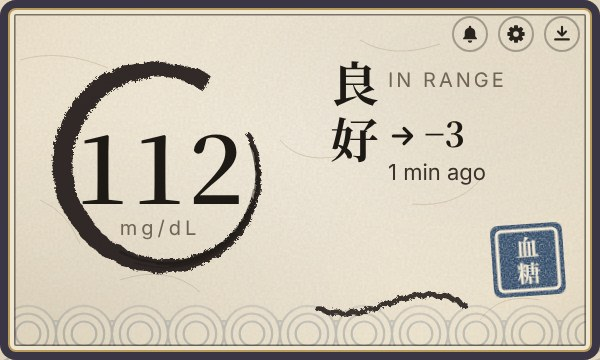
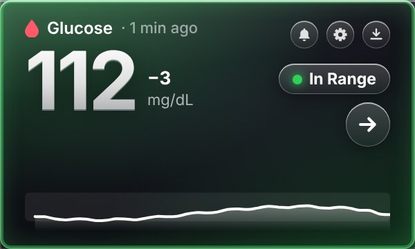
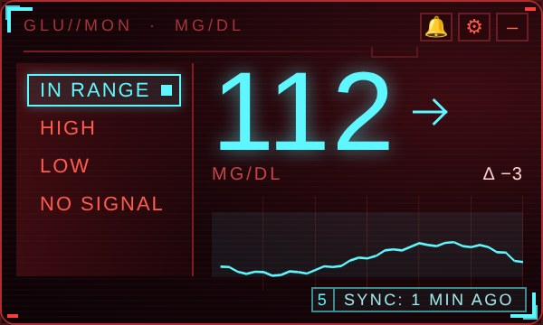

Glucose Widget
Your numbers. Always on top.
A tiny widget for Windows 11 that shows live Dexcom readings and dings when they go high or low.

Always on top
Sits on your desktop like a widget, right where you can glance at it.
Sound alerts
A ding when your reading goes high or low.
About 2 MB
A small native app. No browser engine inside.
Nine themes.
One file each.
Every theme is a single file, the same size as the others, so switching never moves the widget. Add or remove them as you like.







